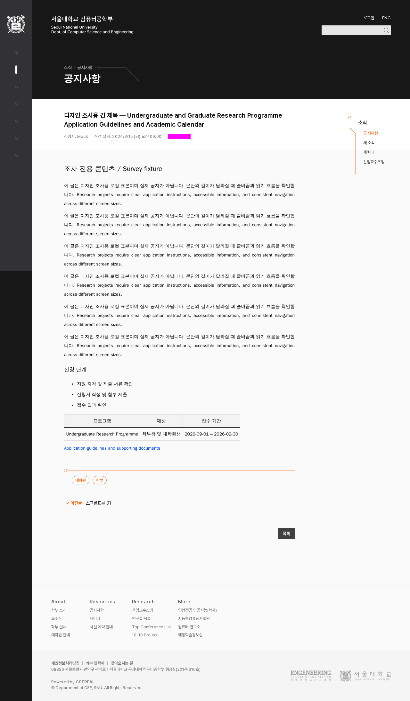
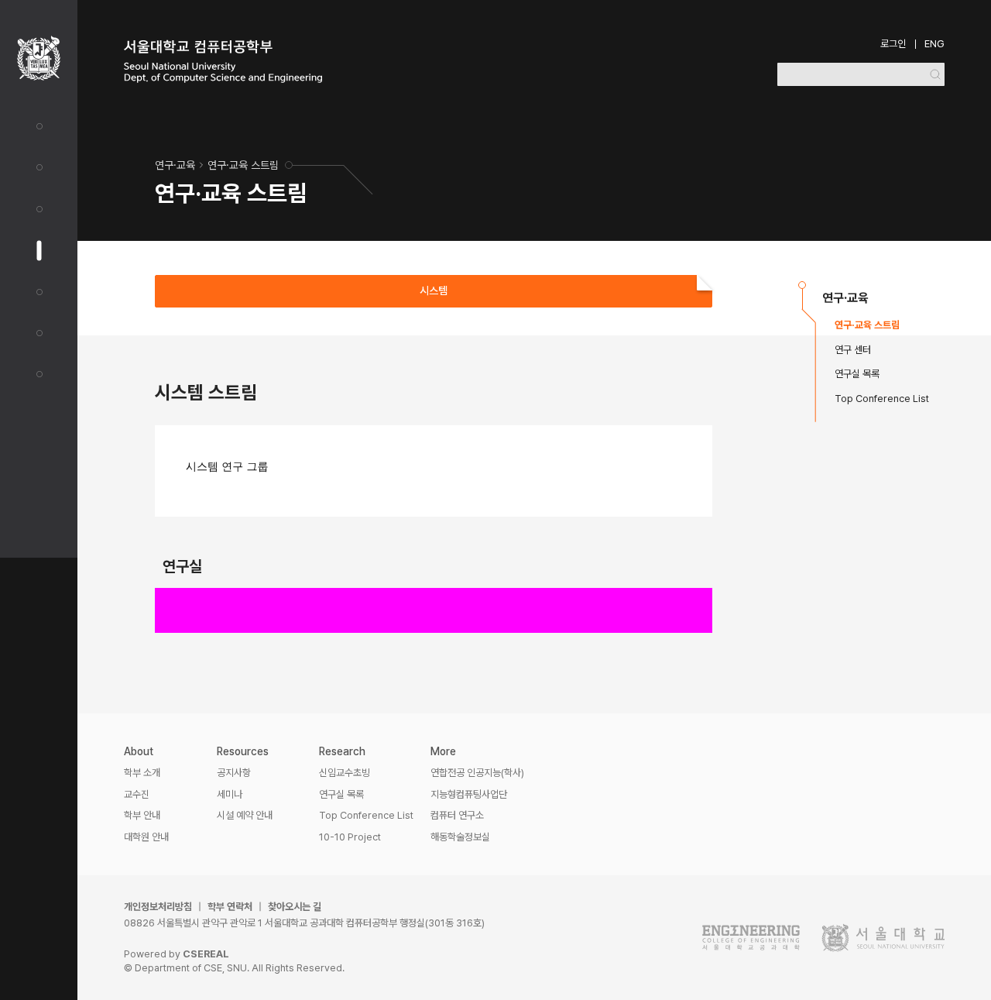
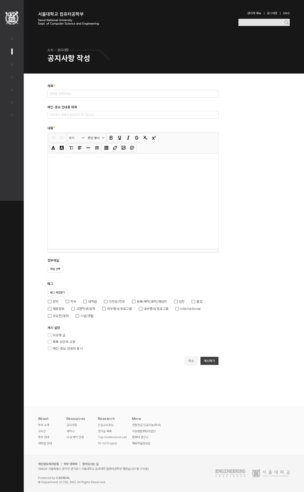

{kind=link}
공지 상세
- 현재 위치
- 어두운 면의 ‘공지사항’과 경로는 어느 구역에 있는지 알려준다.
- 읽을 대상과 내용
- 게시물 제목과 본문이 실제 읽을 내용이다. 구역 제목과 의미를 구분한다.
- 보조 정보·탐색
- 작성자·날짜, 태그·이전 글·목록은 읽기를 돕는다. 주황이 모두 ‘가장 중요한 행동’을 뜻하지는 않는다.
제목·본문·선택은 역할을 구분하고,
주요 실행은 짙은 중립색을 기본으로 한다.
어두운 큰 면·주황·원과 선·접힌 모서리의 보존은 결정됐다. 아래는 이 특징을 유지하면서 역할을 정리하기 위한 자료다.
위쪽의 ‘공지사항’과 본문의 개별 공지 제목은 서로 다른 질문에 답한다. 역할이 다르다는 이유만으로 모든 크기·모양을 다르게 만들 필요는 없다.
이미지는 앱의 변경 전 캡처다. 이미지 위 버튼으로 해당 영역까지 스크롤할 수 있다. 자홍색은 테스트 마스크다. 캡처는 1280px 데스크톱 기준이며 이 페이지에서는 축소해 보여준다.



컴포넌트 이름만으로 규칙을 정의하면 현재의 혼용이 그대로 남는다. 아래는 실제 소스의 기본 상태를 대조한 결과다.
| 행동 | 현재 표현 | 근거 |
|---|---|---|
| 연구실 추가 | 연구실 추가 | 연구실 목록 |
| 교수·직원 추가 | 추가하기 | 교수 목록 |
| 공지 목록의 두 행동 | 편집 새 게시글 | 공지 관리 |
| 폼의 두 행동 | 삭제 저장하기 | Form.Action |
| 예약 폼 제출 | 예약하기 | 예약 추가 |
두 안 모두 장식과 선택의 주황을 유지한다. 여기서는 새 항목 시작·저장·게시·예약 같은 주요 실행의 기본 강조만 비교한다.
선택·장식은 두 안에서 동일
시스템 스트림
연구 분야와 소속 연구실 정보
게시 설정
입력한 내용을 게시하는 단계
선택한 예약 정보
301동 417호
A 미리보기: 주요 실행은 짙은 중립색, 장식과 선택은 주황을 유지한다.
위 세 장면은 강조 범위만 비교하기 위한 축약 모형이다. 실제 페이지의 새 배치·문구 제안이 아니다. 현재 색과 크기를 사용했으며, 주황/흰색 2.88:1의 대비 문제는 아직 해결한 안이 아니다. 최종 색·호버·초점·위험 행동은 후속 비교에서 정한다.
사용자가 A를 선택했다. 주요 실행은 짙은 중립색을 기본으로 하고, 주황의 그래픽·선택 표시는 유지한다.
기존 주황 추가·예약 버튼은 이 방향에 맞춰 후속 정리한다. 최종 색·크기·상태와 어두운 배경 대응은 아직 확정하지 않았다. 앱에는 적용하지 않았다.
앱 소스 기준은 d1baf83c다. 실제 PNG와 소스를 대조했고 앱 코드는 바꾸지 않았다. 로그인한 모든 화면을 새로 렌더하거나 모든 버튼의 상태를 검증한 것은 아니다.
연구 스트림 시드에는 선택지가 하나뿐이다. 여러 선택지의 긴 이름·전환 동작은 해당 컴포넌트 검토에서 보충한다. 기존 시각 회귀 3개 실패도 해결된 것으로 처리하지 않는다.
{kind=link}
{kind=link}